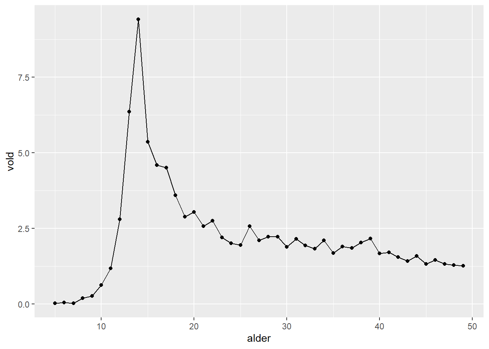
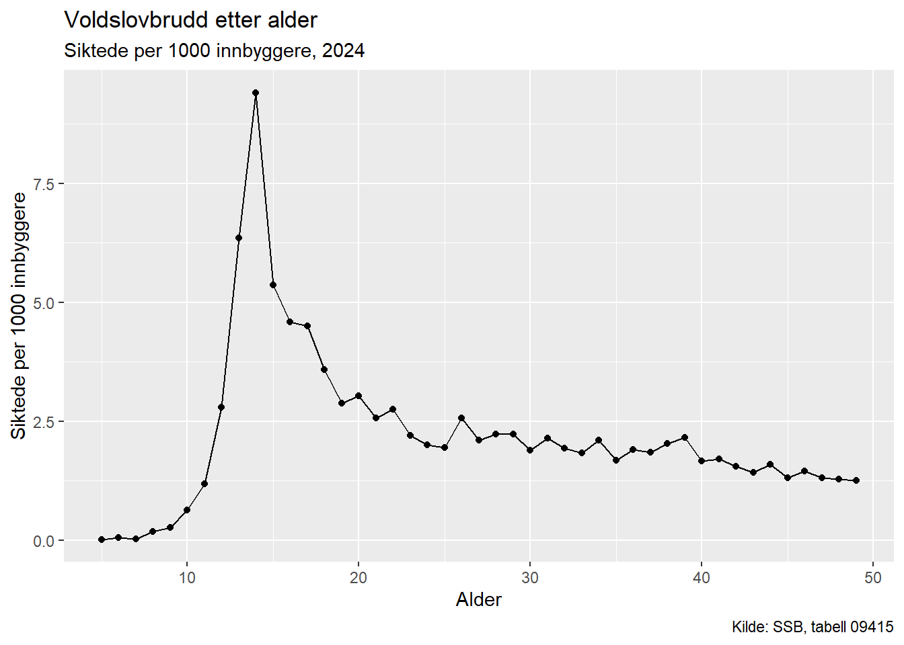
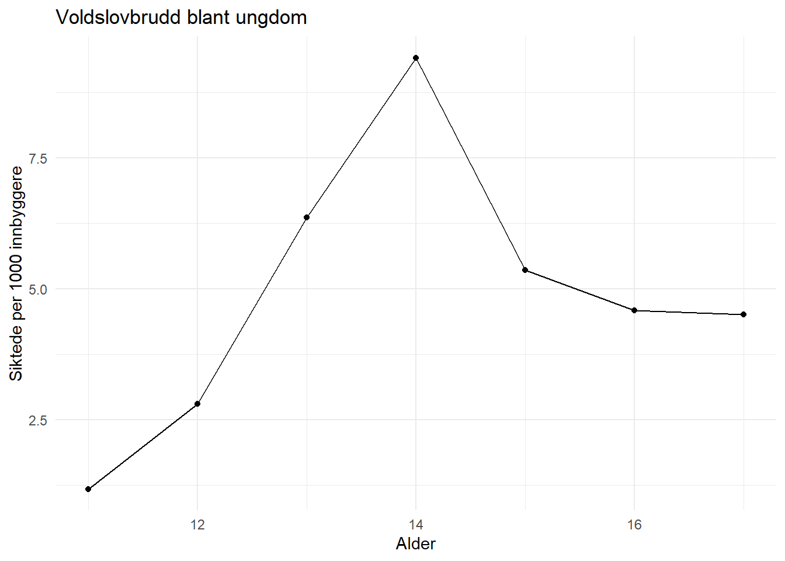
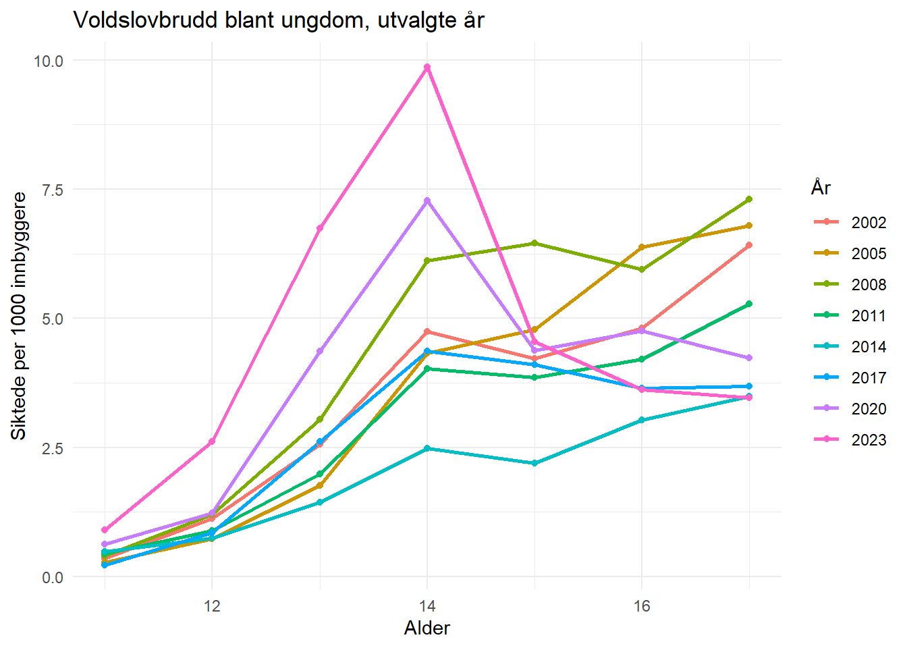

# Installer pakker (trenger bare gjøres én gang)
install.packages(c("tidyverse", "readxl"))4 Din første analyse
I de forrige kapitlene har du installert R og RStudio, og fått en kort introduksjon til grunnleggende konsepter. Nå skal vi gjøre noe annerledes: vi skal kjøre gjennom en hel analyse fra start til mål – lese inn ekte data og lage ekte figurer.
Målet med dette kapittelet er at du skal oppleve at R faktisk fungerer, og at du kan produsere noe meningsfullt med bare noen få linjer kode. Ikke bekymre deg om du ikke forstår alle detaljene. Hvert tema forklares grundig i senere kapitler. Her handler det om å følge med, kjøre koden, og se resultatene.
Dataene vi bruker er kriminalitetsstatistikk fra SSB (Statistisk sentralbyrå), hentet fra tabell 09415. De viser siktede for lovbrudd per 1000 innbyggere, fordelt på alder.
Åpne RStudio, sørg for at prosjektet ditt er aktivt (se kapittelet om installering), og opprett et nytt R-script (File → New File → R Script). Skriv koden inn i scriptet og kjør den linje for linje med Ctrl + Enter.
4.1 Laste pakker
Før vi kan bruke spesialiserte funksjoner, må vi laste pakkene som inneholder dem. Hvis du ikke allerede har installert disse pakkene, gjør det først:
Deretter laster vi pakkene. Dette må gjøres hver gang du starter R på nytt:
# Laste pakker (gjøres hver gang du starter R)
library(tidyverse) # Pakke for datahåndtering og grafikk
library(readxl) # Pakke for å lese Excel-filerFunksjonen install.packages() laster ned pakken til maskinen din, mens library() aktiverer den i den gjeldende R-sesjonen. Se kapittelet om introduksjon til R for mer om pakker.
4.2 Lese inn data
Nå leser vi inn en Excel-fil med kriminalitetsdata. Funksjonen read_excel() leser filen, og <- lagrer resultatet i et objekt vi kaller krim:
# Lese inn en Excel-fil med kriminalitetsdata fra SSB
# read_excel() leser filen, <- lagrer resultatet i objektet "krim"
krim <- read_excel("data/SSB_09415_enkel2024.xlsx")Nå ligger dataene i objektet krim. Filstien "data/SSB_09415_enkel2024.xlsx" betyr at filen ligger i en undermappe som heter data i prosjektmappen din. Innlesning av data dekkes grundig i Del II.
4.3 Ta en titt på dataene
Før vi lager figurer bør vi sjekke at dataene ser fornuftige ut. To nyttige funksjoner for dette er head() og glimpse():
# Se på de første radene i datasettet
# head() viser de 6 første observasjonene
head(krim)# A tibble: 6 × 2
alder vold
<dbl> <dbl>
1 5 0.02
2 6 0.05
3 7 0.03
4 8 0.19
5 9 0.27
6 10 0.63# En annen måte å se på dataene
# glimpse() viser variabelnavn, datatype og de første verdiene
glimpse(krim)Rows: 45
Columns: 2
$ alder <dbl> 5, 6, 7, 8, 9, 10, 11, 12, 13, 14, 15, 16, 17, 18, 19, 20, 21, 2…
$ vold <dbl> 0.02, 0.05, 0.03, 0.19, 0.27, 0.63, 1.18, 2.80, 6.36, 9.41, 5.36…Vi ser at datasettet har to kolonner: alder (gjerningspersonens alder) og vold (antall siktede for vold per 1000 innbyggere i den aldersgruppen, for 2024). La oss se hva disse tallene viser grafisk.
4.4 Din første figur
Nå lager vi vår første figur. Vi bruker ggplot, som er det standard systemet for grafikk i R. Prinsippet er lagvis oppbygging: du starter med et grunnlag og legger til nye elementer ett om gangen. La oss se det steg for steg.
4.4.1 Steg 1: Bare en linje
# Start et plot: alder på x-aksen, vold på y-aksen
# geom_line() tegner en linje mellom datapunktene
ggplot(krim, aes(x = alder, y = vold)) +
geom_line()
Her skjer tre ting: ggplot(krim, ...) sier “bruk datasettet krim”. Inni aes() (kort for aesthetics) angir vi at alder skal på x-aksen og vold på y-aksen. Til slutt sier geom_line() at dataene skal vises som en linje. Resultatet er et minimalt, men fungerende plot.
4.4.2 Steg 2: Legg til punkter
# Legg til geom_point() for å vise hvert datapunkt
ggplot(krim, aes(x = alder, y = vold)) +
geom_line() +
geom_point()
Vi legger til geom_point() med +. Nå ser vi hvert enkelt datapunkt i tillegg til linjen. + i ggplot betyr “legg til et nytt lag”.
4.4.3 Steg 3: Legg til tittel
# Legg til en overskrift med ggtitle()
ggplot(krim, aes(x = alder, y = vold)) +
geom_line() +
geom_point() +
ggtitle("Voldslovbrudd etter alder")
ggtitle() legger til en overskrift på figuren. Enda et lag oppå de forrige.
4.4.4 Steg 4: Legg til akselabels og kilde
# labs() styrer akseetiketter, undertittel og kildeangivelse
ggplot(krim, aes(x = alder, y = vold)) +
geom_line() +
geom_point() +
ggtitle("Voldslovbrudd etter alder",
subtitle = "Siktede per 1000 innbyggere, 2024") +
labs(x = "Alder",
y = "Siktede per 1000 innbyggere",
caption = "Kilde: SSB, tabell 09415")
labs() lar deg sette egne etiketter på aksene. subtitle legger til en undertekst under tittelen, og caption legger til en kildeangivelse nederst.
4.4.5 Steg 5: Endre tema og lagre i et objekt
# theme_minimal() gir et renere utseende
# Vi lagrer figuren i objektet p1 slik at vi kan bruke den igjen
p1 <- ggplot(krim, aes(x = alder, y = vold)) +
geom_line(linewidth = 1) +
geom_point() +
ggtitle("Voldslovbrudd etter alder",
subtitle = "Siktede per 1000 innbyggere, 2024") +
labs(x = "Alder",
y = "Siktede per 1000 innbyggere",
caption = "Kilde: SSB, tabell 09415") +
theme_minimal()
# Vis figuren
p1
theme_minimal() endrer det visuelle temaet til et renere design uten grå bakgrunn. linewidth = 1 gjør linjen litt tykkere. Ved å skrive p1 <- ggplot(...) lagrer vi hele figuren i et objekt, slik at vi kan vise den igjen ved å skrive p1.
Legg merke til hva figuren forteller: voldskriminalitet stiger bratt i tenårene, topper rundt 18–20 år, og faller deretter jevnt. Du har nå laget en informativ figur med ekte data, fra start til slutt.
4.5 Filtrere data
Hva om vi vil se nærmere på bare ungdomsgruppen? Da kan vi filtrere dataene med funksjonen filter(), som velger ut rader som oppfyller et krav:
# Velg ut bare aldersgruppen 10-18 år
# %>% (pipe) sender dataene videre til neste operasjon
# filter() beholder rader der kravet er oppfylt
# & betyr "og" -- begge krav må være oppfylt
krim_ung <- krim %>%
filter(alder > 10 & alder < 18)
# Lag en rask figur av ungdomsgruppen
ggplot(krim_ung, aes(x = alder, y = vold)) +
geom_line() +
geom_point() +
ggtitle("Voldslovbrudd blant ungdom") +
labs(x = "Alder", y = "Siktede per 1000 innbyggere") +
theme_minimal()
Her bruker vi %>% (pipe-operatoren) som betyr “ta dette, og gjør deretter”. Vi tar krim, sender det til filter(), og beholder bare rader der alder er mellom 10 og 18. Resultatet lagres i et nytt objekt krim_ung.
Figuren viser den bratte økningen i ungdomsårene enda tydeligere. Pipen (%>%) og filter() er grunnleggende verktøy i tidyverse som dekkes grundig i Del III.
4.6 Større datasett med flere variable
La oss nå jobbe med et større datasett fra samme SSB-tabell, men med mer detalj: fordelt på type lovbrudd, kjønn og år. Denne Excel-filen er litt mer komplisert – de tre første radene inneholder overskriftstekst fra SSB som ikke er data, og kolonnene har ikke gode variabelnavn:
# Lese inn et større datasett
# skip = 3 hopper over de 3 første radene (overskriftstekst fra SSB)
# col_names angir variabelnavn vi velger selv
# Vi bruker variabelnavn uten æøå for å unngå tegnkodingsproblemer
krim_alle <- read_excel("data/SSB_09415_alderSiktet.xlsx",
skip = 3,
col_names = c("lovbruddsgruppe", "kjonn",
"alder", "aar", "pr1000"))# Se på de første radene
head(krim_alle)# A tibble: 6 × 5
lovbruddsgruppe kjonn alder aar pr1000
<chr> <chr> <dbl> <chr> <dbl>
1 Alle lovbruddsgrupper Begge kjønn 5 2002 0.26
2 Alle lovbruddsgrupper Begge kjønn 5 2003 0.27
3 Alle lovbruddsgrupper Begge kjønn 5 2004 0.13
4 Alle lovbruddsgrupper Begge kjønn 5 2005 0.12
5 Alle lovbruddsgrupper Begge kjønn 5 2006 0.1
6 Alle lovbruddsgrupper Begge kjønn 5 2007 0.07# Se hvilke lovbruddsgrupper som finnes
# table() teller opp hvor mange ganger hver verdi forekommer
table(krim_alle$lovbruddsgruppe)
Alle lovbruddsgrupper Annet lovbrudd
3174 3174
Annet vinningslovbrudd Eiendomsskade
3174 3174
Eiendomstyveri Ordens- og integritetskrenkelse
3174 3174
Rusmiddellovbrudd Seksuallovbrudd
3174 3174
Trafikkovertredelse Vold og mishandling
3174 3174 Vi ser at datasettet inneholder flere lovbruddsgrupper. $-tegnet brukes for å hente ut én enkelt variabel fra datasettet. La oss filtrere til bare voldskriminalitet:
# Velg ut bare voldskriminalitet for begge kjønn
krim_vold <- krim_alle %>%
filter(lovbruddsgruppe == "Vold og mishandling",
kjonn == "Begge kjønn")4.7 Figur med flere grupper
Nå har vi data for voldskriminalitet over flere år. La oss bygge opp en figur steg for steg igjen.
4.7.1 Steg 1: Enkel linje – noe er galt
# Prøv å tegne en enkel linje -- dette blir rotete!
ggplot(krim_vold, aes(x = alder, y = pr1000)) +
geom_line()
Denne figuren ser kaotisk ut. Det er fordi ggplot prøver å tegne alle datapunktene – fra alle år – som én sammenhengende linje. Vi må fortelle ggplot at hvert år er en egen gruppe.
4.7.2 Steg 2: Gruppering og farge
# group = aar gjør at hvert år får sin egen linje
# color = aar gir ulike farger for hvert år
ggplot(krim_vold, aes(x = alder, y = pr1000, group = aar, color = aar)) +
geom_line()
Nå er det mye bedre. group = aar forteller ggplot at datapunktene skal deles inn etter år, og color = aar gir hver gruppe en egen farge. Vi ser alderskurven for voldskriminalitet for hvert år.
4.7.3 Steg 3: Titler og tema
# Legg til titler og renere tema
ggplot(krim_vold, aes(x = alder, y = pr1000, group = aar, color = aar)) +
geom_line() +
ggtitle("Voldslovbrudd etter alder og år") +
labs(x = "Alder",
y = "Siktede per 1000 innbyggere",
color = "År") +
theme_minimal()
Samme prinsipp som før: vi legger til lag for tittel, akselabels og tema. color = "År" i labs() endrer etiketten på fargelegenden.
4.8 Avgrense ytterligere
Figuren ovenfor har mange linjer og kan være vanskelig å lese. La oss avgrense til ungdom og velge ut bare noen utvalgte år:
# Avgrense til alder 10-18 og hvert tredje år fra 2002 til 2024
# %in% sjekker om en verdi finnes i en liste
# seq() lager en tallrekke: 2002, 2005, 2008, ..., 2024
krim_utvalg <- krim_vold %>%
filter(alder > 10, alder < 18) %>%
filter(aar %in% seq(2002, 2024, by = 3))
# Figur med tykkere linjer og punkter
ggplot(krim_utvalg, aes(x = alder, y = pr1000, group = aar, color = aar)) +
geom_line(linewidth = 1) +
geom_point() +
ggtitle("Voldslovbrudd blant ungdom, utvalgte år") +
labs(x = "Alder",
y = "Siktede per 1000 innbyggere",
color = "År") +
theme_minimal()
Her kombinerer vi flere filtreringer: først avgrenser vi til ungdom, deretter velger vi ut hvert tredje år. seq(2002, 2024, by = 3) lager tallrekken 2002, 2005, 2008, …, 2024, og %in% sjekker om verdien av aar finnes i denne listen.
Figuren blir mye lettere å lese, og mønsteret er tydelig: vi kan se hvordan ungdomskriminaliteten har utviklet seg over tid.
4.9 Tidstrend for utvalgte aldersgrupper
Til nå har vi hatt alder på x-aksen og brukt farger for å skille mellom år. Vi kan også snu perspektivet: sette år på x-aksen og bruke farger for å skille mellom aldersgrupper. Da ser vi tidstrenden – hvordan kriminaliteten har utviklet seg over tid for ulike aldersgrupper.
# Velg ut noen utvalgte aldersgrupper
# factor() gjør alder om til en kategori slik at fargene blir diskrete
krim_alder <- krim_vold %>%
filter(alder %in% c(12, 14, 15, 18, 25, 30)) %>%
mutate(alder = factor(alder))
# Tidstrend: år på x-aksen, en linje per aldersgruppe
ggplot(krim_alder, aes(x = aar, y = pr1000, group = alder, color = alder)) +
geom_line(linewidth = 1) +
geom_point() +
ggtitle("Tidstrend i voldslovbrudd for utvalgte aldersgrupper") +
labs(x = "År",
y = "Siktede per 1000 innbyggere",
color = "Alder") +
theme_minimal()
Legg merke til at koden er nesten identisk med den forrige figuren – vi har bare byttet hva som er på x-aksen (aar i stedet for alder) og hva som styrer fargene (alder i stedet for aar). factor(alder) gjør at alder behandles som en kategori med diskrete farger i stedet for en sammenhengende skala.
Figuren viser at utviklingen er svært ulik for ulike aldersgrupper. 18-åringene har det høyeste nivået, men alle aldersgrupper kan studeres over tid. Med noen få endringer i koden har vi et helt annet perspektiv på de samme dataene.
4.10 Oppsummering
I dette kapittelet har du gjennomført en hel analyse fra start til mål:
- Lastet pakker med
library() - Lest inn data fra en Excel-fil med
read_excel() - Utforsket dataene med
head(),glimpse()ogtable() - Laget figurer med
ggplot(),geom_line()oggeom_point() - Lagt til titler og etiketter med
ggtitle()oglabs() - Endret utseende med
theme_minimal() - Filtrert data med
filter()og pipen%>%
Alt dette er verktøy du vil bruke gjennom hele boken. Hvert tema dekkes grundig i sine egne kapitler: innlesning av data i Del II, datahåndtering med tidyverse i Del III, og grafikk med ggplot i Del IV.
Hvis det er noe du ikke helt forsto – det er helt normalt. Poenget nå var å se at R fungerer, at du kan produsere noe meningsfullt med noen få linjer kode, og at den lagvise oppbyggingen av figurer gir deg full kontroll over resultatet.
4.11 Oppgaver
Exercise 4.1 Kjør all koden i dette kapittelet selv i RStudio. Gjør noen endringer og kjør på nytt – for eksempel, prøv å endre tittelen på en figur, legg til geom_point(color = "red") i stedet for geom_point(), eller filtrer på en annen aldersgruppe. Målet er at du skal se at endringene dine faktisk fungerer.
Exercise 4.2 Filtrer krim_alle på en annen lovbruddsgruppe enn “Vold og mishandling”. Bruk table(krim_alle$lovbruddsgruppe) for å se hvilke grupper som finnes. Lag en figur tilsvarende den vi lagde for voldskriminalitet.